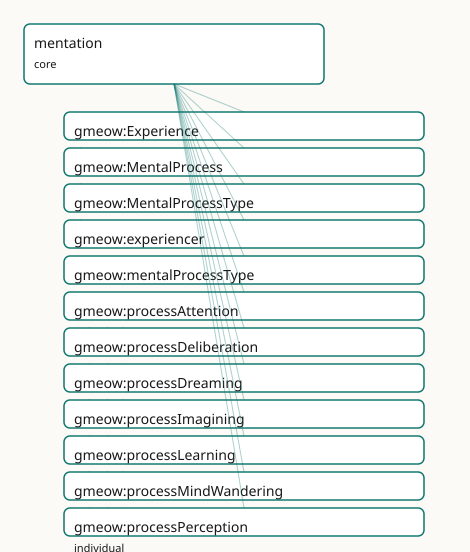

GMEOW Mentation Module
- IRI: https://blackcatinformatics.ca/gmeow/slices/mentation
- Tier: core
Group: core
What This Slice Covers
This slice owns 17 terms and contributes 1 mapping or projection rows. Use it when its terms match the native fact you want to preserve; use the linkage tables to see how those facts leave GMEOW for consumer vocabularies.
Dependencies
Consumers
- The agent-memory timeline — a unified, queryable record of an agent's mental life as it unfolds; the single occurrent substrate that inference, learning, imagination, and dreaming specialise or compose over.
Local Map

Examples
Mental Timeline
- Source:
slices/core/mentation/examples/mental-timeline.ttl - GMEOW terms:
gmeow:Agent,gmeow:CognitiveState,gmeow:Event,gmeow:Experience,gmeow:MentalMoment,gmeow:MentalProcess,gmeow:eventTemporalFrame,gmeow:eventTime,gmeow:experiencer,gmeow:mentalProcessType - External prefixes:
gufo,xsd
# SPDX-FileCopyrightText: 2026 Blackcat Informatics® Inc. <paudley@blackcatinformatics.ca>
# SPDX-License-Identifier: CC-BY-4.0
#
# Worked example — a small mental timeline for one agent.
#
# Three mental occurrents illustrate the mentation slice's core idioms:
# 1. A gmeow:MentalProcess of type processPerception — Ada notices morning light.
# Carries a temporal frame the same way gmeow:Event takes one (events idiom,
# gmeow:eventTime + gmeow:eventTemporalFrame), and MANIFESTS a perceptual
# capacity via gmeow:realizesMentalMoment (ontological participation bridge).
# 2. A gmeow:MentalProcess of type processReasoning — Ada works through a proof.
# gmeow:producesMentalMoment points at ex:beliefQEDholds — the reasoning CREATES
# a new belief that did not exist beforehand (a gmeow:MentalMoment).
# 3. A gmeow:Experience (the phenomenal subset of MentalProcess) of type
# processDreaming — Ada's dream last night. gmeow:Experience is used because
# there is something it is like to undergo a dream (the qualia-bearing subset).
#
# All three are borne by exactly one experiencer (gmeow:experiencer is functional);
# gmeow:mentalProcessType is non-functional, so a process can carry multiple types.
@prefix gmeow: <https://blackcatinformatics.ca/gmeow/> .
@prefix ex: <https://blackcatinformatics.ca/gmeow/examples/mentation/> .
@prefix rdfs: <http://www.w3.org/2000/01/rdf-schema#> .
@prefix xsd: <http://www.w3.org/2001/XMLSchema#> .
# --------------------------------------------------------------------------- #
# Agent
# --------------------------------------------------------------------------- #
ex:ada a gmeow:Agent ;
gmeow:name "Ada"@en .
# --------------------------------------------------------------------------- #
# 1. Morning perception — a MentalProcess of type processPerception
# --------------------------------------------------------------------------- #
ex:morningPerception a gmeow:MentalProcess ;
rdfs:label "Ada's morning perception of daylight"@en ;
gmeow:experiencer ex:ada ; # functional: one process, one experiencer
gmeow:mentalProcessType gmeow:processPerception ; # value-vocab slot, not a subclass
gmeow:eventTime "2026-06-15T07:12:00Z"^^xsd:dateTime ; # temporal frame — same idiom as events/wedding.ttl
gmeow:eventTemporalFrame gmeow:temporalFrameUTCGregorian ;
gmeow:realizesMentalMoment ex:perceivedMorningLight . # ontological participation: manifests the perceptual capacity
# The bridge target: a gmeow:MentalMoment (the intrinsic perceptual mode). Its
# bearer is the process's gmeow:experiencer (ex:ada); like the cognition idiom
# (ex:adaPythonKnowing a gmeow:CognitiveState) the mode is typed without asserting
# inherence — gufo:inheresIn is an alignment target, not an asserted axiom (P5).
ex:perceivedMorningLight a gmeow:MentalMoment ;
rdfs:label "Ada's perceptual state: morning light perceived"@en .
# --------------------------------------------------------------------------- #
# 2. Proving a theorem — a MentalProcess of type processReasoning
# --------------------------------------------------------------------------- #
ex:solvingTheProof a gmeow:MentalProcess ;
rdfs:label "Ada's reasoning through the proof of QED"@en ;
gmeow:experiencer ex:ada ;
gmeow:mentalProcessType gmeow:processReasoning ; # an inference episode unfolding in time
gmeow:eventTime "2026-06-15T09:30:00Z"^^xsd:dateTime ;
gmeow:eventTemporalFrame gmeow:temporalFrameUTCGregorian ;
gmeow:producesMentalMoment ex:beliefQEDholds . # creation: reasoning brings this NEW belief into being
# The bridge target: a fresh belief not held beforehand — a gmeow:MentalMoment
# (the endurant doxastic mode). Its bearer is the experiencer (ex:ada); typed
# without asserting inherence, per the P5 alignment-target convention.
ex:beliefQEDholds a gmeow:MentalMoment ;
rdfs:label "belief: the proof concludes (QED)"@en .
# --------------------------------------------------------------------------- #
# 3. Last night's dream — a gmeow:Experience (the phenomenal subset)
# --------------------------------------------------------------------------- #
ex:lastNightsDream a gmeow:Experience ; # qualia-bearing: there is something it is like
rdfs:label "Ada's dream last night"@en ;
gmeow:experiencer ex:ada ;
gmeow:mentalProcessType gmeow:processDreaming ; # offline, sleep-bound imagined content
gmeow:eventTime "2026-06-15T03:00:00Z"^^xsd:dateTime ;
gmeow:eventTemporalFrame gmeow:temporalFrameUTCGregorian .
# No bridge property: a dream need not produce or update a belief state;
# all three bridge properties are non-functional so their absence is valid.
Terms
Classes
| Term | Label | Definition |
|---|---|---|
gmeow:Experience |
Experience | The phenomenally-conscious, qualia-bearing subset of gmeow:MentalProcess — a mental occurrence there is something it is like to undergo: a perception-as-experi... |
gmeow:MentalProcess |
Mental Process | A mental occurrence that unfolds in time — the perdurant (occurrent) counterpart of the endurant gmeow:MentalMoment: a perceiving, a reasoning, an imagining, a... |
gmeow:MentalProcessType |
Mental Process Type | The kind of a mental process — a closed-but-open value vocabulary (individuals, never subclasses; the gmeow:EventType idiom): gmeow:processPerception, gmeow:pr... |
Properties
| Term | Label | Definition |
|---|---|---|
gmeow:experiencer |
experiencer | The agent whose mental process this is — the one undergoing the perceiving, reasoning, or dreaming. Functional: one process, one experiencer (a mental occurren... |
gmeow:mentalProcessType |
mental process type | The kind of a mental process — a gmeow:MentalProcessType value (gmeow:processPerception, gmeow:processReasoning, gmeow:processDreaming, …). NOT functional: a s... |
gmeow:producesMentalMoment |
produces mental moment | Creation: relates a mental process to a NEW gmeow:MentalMoment it brings into being — the process is the causal origin of a fresh belief, knowledge-state, or p... |
gmeow:realizesMentalMoment |
realizes mental moment | Ontological participation: relates a mental process to a gmeow:MentalMoment it MANIFESTS — the process expresses or makes-present an already-potential capacity... |
gmeow:updatesMentalTenure |
updates mental tenure | Diachronic transition: relates a mental process to a gmeow:TimeScopedRelation (a held, time-scoped state or tenure) that the process CHANGES — the process revi... |
Individuals
| Term | Label | Definition |
|---|---|---|
gmeow:processAttention |
attention | An episode of selective attention — focusing cognitive resources on a subject, sensation, or task while backgrounding the rest. |
gmeow:processDeliberation |
deliberation | A deliberation episode — practical weighing of options, reasons, or consequences toward a choice or intention. |
gmeow:processDreaming |
dreaming | A dreaming episode — an offline, typically sleep-bound gmeow:Experience of imagined content; composed into the dreaming extension with awareness mode an... |
gmeow:processImagining |
imagining | An episode of imagining — entertaining quasi-perceptual or suppositional content as-if, decoupled from current perception and from belief (the imagination slic... |
gmeow:processLearning |
learning | A learning episode — the occurrent that transitions an agent's knowledge or skill state (acquisition, being-taught, consolidation, transfer, unlearning). The o... |
gmeow:processMindWandering |
mind-wandering | A mind-wandering episode — undirected, stimulus-independent thought that drifts without a task goal (daydreaming, spontaneous reverie). |
gmeow:processPerception |
perception | A perceptual episode — sensing and registering the environment (or an internal state) as it occurs. The occurrent that typically realizes a perceptual observat... |
gmeow:processReasoning |
reasoning | A reasoning episode — inference as it unfolds in time, drawing a conclusion from premises. The occurrent face of a gmeow:InferenceProcess (inference slice). |
gmeow:processRecollection |
recollection | A recollection episode — retrieving a stored memory into present awareness (the act, not the stored content). Forgetting is modelled as suppression elsewhere,... |
Linkages
- Rows: 1
- Projection profiles: -
- External vocabularies:
bfo
| Source | Kind | Profile | Predicate/Relation | Target | Evidence |
|---|---|---|---|---|---|
gmeow:MentalProcess |
equivalence | - |
skos:relatedMatch | bfo:BFO_0000015 | gmeow-mentation.sssom.tsv; gmeow:eqMentation001; confidence 0.5 |
Guide
mentation
Slice:
https://blackcatinformatics.ca/gmeow/slices/mentation· tier: core
The occurrent (perdurant) half of mind — mental processes and experiences that unfold in time: perceiving, reasoning, imagining, remembering, dreaming. The companion to the endurant mental-moment stack (belief, knowledge, desire, emotion) in the cognition / epistemics family. Where the endurant slices model the states an agent is in, this slice models the events that produce or update them.
In gUFO's ontological split, endurants are continuants that persist through time (modes, qualities,
states — gmeow:MentalMoment and its subclasses), while perdurants (occurrents) are processes and
experiences that have temporal parts and unfold by happening. GMEOW's endurant mental side is rich;
this slice completes the picture with the perdurant umbrella so the full arc — from process to
resulting state — can be queried as a single timeline.
Classes
gmeow:MentalProcess
A mental occurrence that unfolds in time — the perdurant (occurrent) counterpart of the endurant
gmeow:MentalMoment: a perceiving, a reasoning, an imagining, a remembering, a dreaming. The
kernel-level umbrella under which every mental event lives, so an agent's mental life can be queried
as a single occurrent stream. A gmeow:Event borne by exactly one agent (gmeow:experiencer); the
kind of process is a gmeow:mentalProcessType value, never a subclass (Principle 9).
gmeow:InferenceProcess (inference slice) and gmeow:LearningEvent (learning slice) reparent
under it from their own slices.
Stereotype: owl:Class, gufo:EventType · ⊑ gmeow:Event
gmeow:Experience
The phenomenally-conscious, qualia-bearing subset of gmeow:MentalProcess — a mental occurrence
there is something it is like to undergo: a perception-as-experienced, a felt emotion-episode, a
dream. Distinguished from sub-personal mental processing that carries no first-person character. The
one genuine subclass in this slice; finer kinds remain gmeow:mentalProcessType values.
Stereotype: owl:Class, gufo:EventType · ⊑ gmeow:MentalProcess
gmeow:MentalProcessType
The kind of a mental process — a closed-but-open value vocabulary (individuals, never subclasses;
the gmeow:EventType idiom): gmeow:processPerception, gmeow:processAttention,
gmeow:processReasoning, gmeow:processImagining, gmeow:processDeliberation,
gmeow:processRecollection, gmeow:processMindWandering, gmeow:processDreaming. New kinds are
minted as individuals, never as subclasses of gmeow:MentalProcess (Principle 9: no overtyping).
Stereotype: owl:Class, gufo:AbstractIndividualType · ⊑ gufo:QualityValue
Properties
gmeow:experiencer
The agent whose mental process this is — the one undergoing the perceiving, reasoning, or dreaming. Functional: one process, one experiencer (a mental occurrent inheres in exactly one agent; two agents reasoning about the same thing are two processes).
Domain: gmeow:MentalProcess · Range: gmeow:Agent · Functional
gmeow:mentalProcessType
The kind of a mental process — a gmeow:MentalProcessType value (gmeow:processPerception,
gmeow:processReasoning, gmeow:processDreaming, …). NOT functional: a single occurrence may
carry several type values (a reverie that is both imagining and mind-wandering). Mirrors
gmeow:eventType.
Domain: gmeow:MentalProcess · Range: gmeow:MentalProcessType · Non-functional
gmeow:realizesMentalMoment
Ontological participation: relates a mental process to a gmeow:MentalMoment it manifests —
the process expresses or makes-present an already-potential capacity, state, or mode rather than
creating a fresh one. Use for perceptions that bring a latent perceptual faculty into actuation, or
processes that express an existing disposition. NOT functional — one process may manifest several
moments.
Domain: gmeow:MentalProcess · Range: gmeow:MentalMoment · Non-functional
gmeow:producesMentalMoment
Creation: relates a mental process to a NEW gmeow:MentalMoment it brings into being — the
process is the causal origin of a fresh belief, knowledge-state, or perceptual claim that did not
exist beforehand. Use for reasoning that settles a fresh belief, an abductive inference that
produces a hypothesis, or a perception that generates a new claim. NOT functional — one process may
produce several moments.
Domain: gmeow:MentalProcess · Range: gmeow:MentalMoment · Non-functional
gmeow:updatesMentalTenure
Diachronic transition: relates a mental process to a gmeow:TimeScopedRelation (a held, time-scoped
state or tenure) that the process changes — the process revises, extends, or closes a belief
tenure, a knowledge tenure, or any other time-scoped mental holding. Use for deliberations that
update a belief tenure, learning episodes that revise a knowledge tenure, or recollections that
reopen a suppressed tenure. NOT functional — one process may update several tenures.
Domain: gmeow:MentalProcess · Range: gmeow:TimeScopedRelation · Non-functional
Value individuals — gmeow:MentalProcessType
gmeow:processPerception
A perceptual episode — sensing and registering the environment (or an internal state) as it occurs. The occurrent that typically realizes a perceptual observation or claim.
gmeow:processAttention
An episode of selective attention — focusing cognitive resources on a subject, sensation, or task while backgrounding the rest.
gmeow:processReasoning
A reasoning episode — inference as it unfolds in time, drawing a conclusion from premises. The
occurrent face of a gmeow:InferenceProcess (inference slice).
gmeow:processImagining
An episode of imagining — entertaining quasi-perceptual or suppositional content as-if, decoupled from current perception and from belief (the imagination slice's faculty in action).
gmeow:processDeliberation
A deliberation episode — practical weighing of options, reasons, or consequences toward a choice or intention.
gmeow:processRecollection
A recollection episode — retrieving a stored memory into present awareness (the act, not the stored content). Forgetting is modelled as suppression elsewhere, not as a process here.
gmeow:processMindWandering
A mind-wandering episode — undirected, stimulus-independent thought that drifts without a task goal (daydreaming, spontaneous reverie).
gmeow:processDreaming
A dreaming episode — an offline, typically sleep-bound gmeow:Experience of imagined content;
composed into the dreaming extension with awareness mode and content-origin.
Doctrine highlights
- Occurrent umbrella —
gmeow:MentalProcess⊑gmeow:Eventis the single home for every mental occurrence; one SPARQL query returns an agent's whole mental timeline. - Value-vocab, not taxonomy (Principle 9) — the kind of a process is a
gmeow:mentalProcessTypevalue (agmeow:MentalProcessTypeindividual), never a subclass ofgmeow:MentalProcess. The one genuine subclass isgmeow:Experience— the phenomenally-conscious subset. - Three precise bridges —
gmeow:realizesMentalMoment(manifest an existing capacity/state),gmeow:producesMentalMoment(create a new moment),gmeow:updatesMentalTenure(change a held time-scoped tenure). All three are non-functional; the first two range overgmeow:MentalMoment, the third overgmeow:TimeScopedRelation. Renamed from the design'srealizesto avoid colliding with the WEMIgmeow:realizes(Expression→Work) — Principle 4. - Reparenting hooks stay open —
gmeow:InferenceProcessandgmeow:LearningEventdeclarerdfs:subClassOf gmeow:MentalProcessfrom their own slices, never pre-declared here.
Dependencies
Depends on kernel (gmeow:Agent, gmeow:Event via events), events (the event spine and
gufo:EventType stereotype), temporal, and observations.